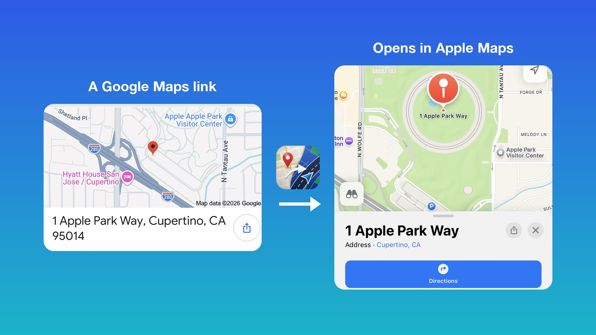

Google Maps links open in Apple Maps.
Tap any Google Maps link in Safari and Apple Maps opens with the right place, search or directions. No Google Maps app, no App Store detour.
$1.99 once. iPhone, iPad and Mac included. No subscription.

Hero video slot: images/hero.mp4 (or images/hero.jpg). See images/README.md.
Directions actually work
Google's Directions buttons, shared links, short links and search results all open Apple Maps directions, with walking, transit and cycling kept.
Every kind of link
Places, searches, coordinates, map thumbnails, local business cards, and links Google adds after the page loads. Regional Google sites too.
Buy once, use everywhere
One purchase covers iPhone, iPad and Mac. No subscription, no in-app purchases.
Privacy you can check
No analytics, no tracking, no data collected. The source is on GitHub, so you don't have to take our word for it.
How it works
Tap a Google Maps link in Safari
From a Google search result, a shared message, a restaurant's website, anywhere.
images/app-main.pngMaps Instead converts it on your device
The link is rewritten into an Apple Maps link in plain JavaScript, in a few milliseconds. Nothing is sent anywhere.
images/popup.pngApple Maps opens, already filled in
Directions, a pin, or a search, matching what the Google link meant.
images/ios-test.pngQuestions
Does it work with the "Directions" button in Google search results?
Yes. That is the case most of these extensions get wrong, and the one Maps Instead is built around.
Do shared short links (maps.app.goo.gl) work?
Yes. Where the destination is inside the link it is converted instantly; otherwise Maps Instead resolves it, which is the only network request it ever makes.
Can I pause it?
Yes. Tap the “Maps Instead” button in Safari's toolbar and switch it off. Links open normally until you switch it back on.
Does it work in Chrome or other browsers?
No. It is a Safari extension, and Safari extensions only run in Safari.
What does it collect?
Nothing. See the privacy policy; it is short.